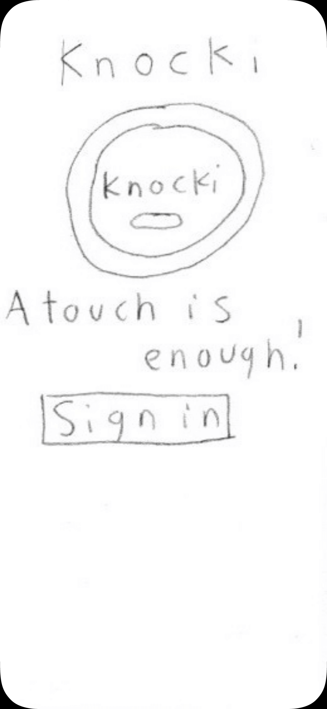

Check our App.
Click HereInteract here with our Marvel prototype or click on the link.
Click HereIn this screen we will have an image as background, here will be the title of the company, an image of knocki device an just one button to start the process of login in.
For the login in screen will be two inputs, one for your username and one for your password.
After login in, you will be send to the Knocki management screen, were you can check your registered Knocki devices and have the option of add more. After this point there will always be in the bottom of the screen a bar with the home button, return button, info button and settings button.
This will just be a status screen that will be displayed when the system is searching for a new Knocki device.
This screen will display the Knocki devices that have been found, after that you will have to choose one and then you will be able to configure the touch gestures.
After finishing adding knockis, you will be able to enter the home screen. In the home screen you will be able to manage your Knocki Devices by the place they are and in the bottom there will be the "add new space" button.
If you select one of the places displayed, you will visualize a few options, in the top you will be able to add a new gesture and in the middle you will be able to select an the modify the existing gestures.
After pressing the "add new touch" button, you will be able to name it, define the gesture, select the device that will register that gesture and the actions that the device will do after detecting the gesture.
After adding a new gesture you will return to the options on the place selected before, you will visualize the gesture added, and again you will be able to modify the gestures or add a new one.
If you select one of the existing gestures, you will be able to change its name, edit the gesture or register that gesture with another Knocki device.
In the home screen if you select the "add new space" button you will be able to edit the existing spaces or add a new one with specific characteristics.
Finally after adding a new space, you will return to the home screen, there you will see the existing spaces and the new one, you will be able to interact with the app and do any of the processes whenever you want.
Interact here with our Marvel prototype or click on the link.
Click HereIn this screen we will have an image as background, here will be the title of the company, an image of knocki device an just one button to start the process of login in.
For the login in screen will be two inputs, one for your username and one for your password.
After login in, you will be send to the Knocki management screen, were you can check your registered Knocki devices and have the option of add more. After this point there will always be in the bottom of the screen a bar with the home button, return button, info button and settings button.
This will just be a status screen that will be displayed when the system is searching for a new Knocki device.
This screen will display the Knocki devices that have been found, after that you will have to choose one and then you will be able to configure the touch gestures.
After finishing adding knockis, you will be able to enter the home screen. In the home screen you will be able to manage your Knocki Devices by the place they are and in the bottom there will be the "add new space" button.
If you select one of the places displayed, you will visualize a few options, in the top you will be able to add a new gesture and in the middle you will be able to select an the modify the existing gestures.
After pressing the "add new touch" button, you will be able to name it, define the gesture, select the device that will register that gesture and the actions that the device will do after detecting the gesture.
After adding a new gesture you will return to the options on the place selected before, you will visualize the gesture added, and again you will be able to modify the gestures or add a new one.
If you select one of the existing gestures, you will be able to change its name, edit the gesture or register that gesture with another Knocki device.
In the home screen if you select the "add new space" button you will be able to edit the existing spaces or add a new one with specific characteristics.
Finally after adding a new space, you will return to the home screen, there you will see the existing spaces and the new one, you will be able to interact with the app and do any of the processes whenever you want.